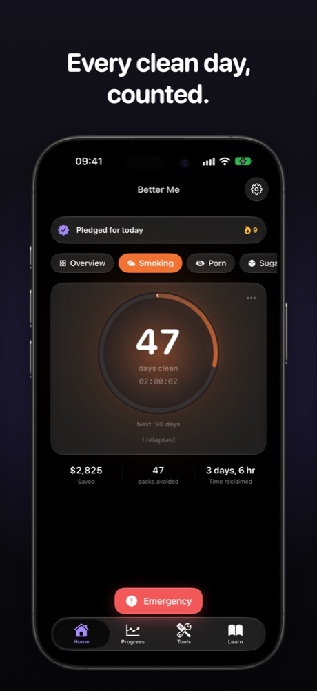
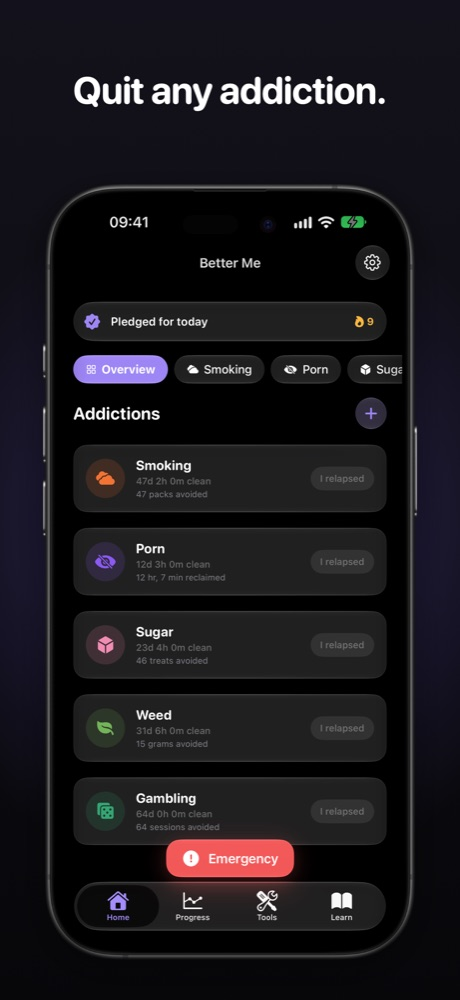
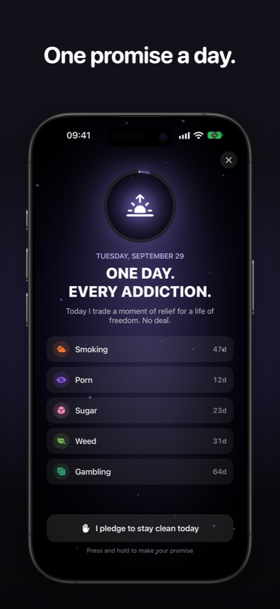
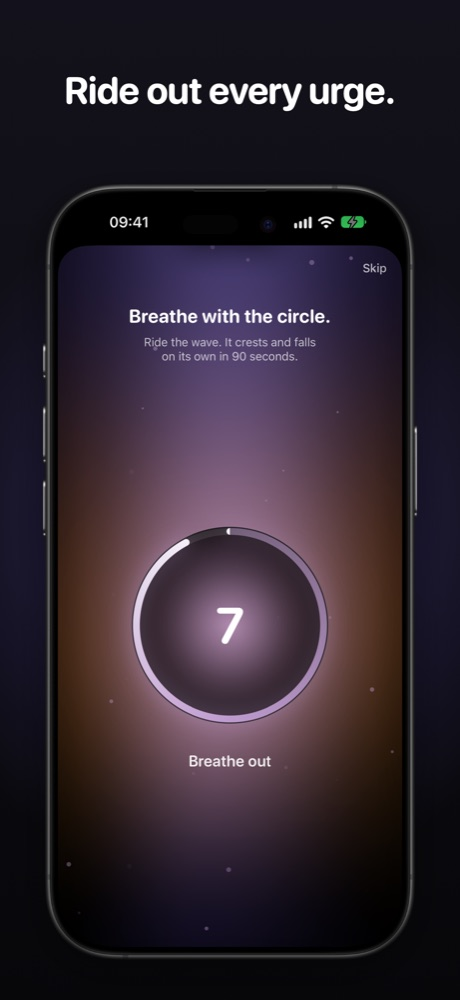
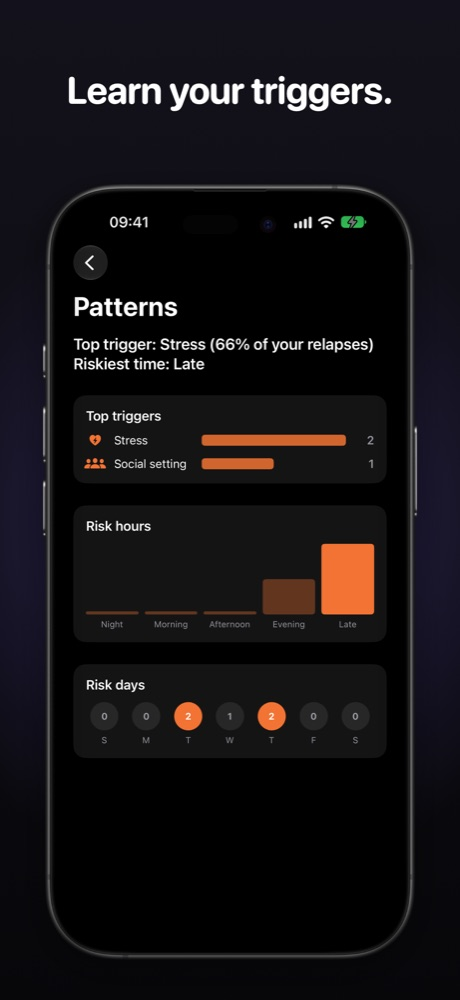

Quitter · Quit any addiction, for iPhone
Every clean day, counted.
Quit smoking, drinking, porn, vaping, weed, sugar, gambling or anything else that holds you back. Quitter counts your clean days and gives you a real method for the hard moments.
- No account
- Data stays on your device
- Free to start

A method, not just a counter
- 1
Make a pledge
Start each day with one promise and close it with an evening review.
- 2
Ride out the urge
When a craving hits, tap SOS and follow the 90-second guided breathing.
- 3
Learn your patterns
See your top triggers and riskiest hours, and plan for them before they come.
What you get
A counter for every addiction
Days, hours and minutes clean for each one, plus money saved and time reclaimed.
Daily pledge & review
A morning pledge and an evening review, built on Stoic practice.
SOS for urges
A guided 90-second breathing exercise, with your own if-then plans on screen.
Withdrawal timeline
See what your body goes through each day, so the hard days make sense.
8-week recovery program
Short lessons that unlock as your streak grows.
Relapse comeback
Name the trigger, keep your clean days and plan the next time.
Personal patterns
Your top triggers and riskiest hours, with a reminder when you need it.
Content Shield
Block harmful websites and keywords in Safari.
Private by design
There is no account to create and no server that holds your streaks, urges or notes. Your data stays on your device, with optional sync to your own iCloud.
A look inside




Frequently asked questions
What can I quit with Quitter?
Smoking, drinking, vaping, weed, porn, sugar, gambling or anything else that holds you back. Each addiction gets its own counter, with days, hours and minutes clean, money saved and milestones.
What do I do when an urge hits?
Tap SOS for a guided 90-second breathing exercise to ride out the craving. Your own if-then plans appear right on the SOS screen, so you know what to do before the urge decides for you.
What happens if I relapse?
Log what triggered it, keep your clean days and make a plan for next time. Quitter also shows your personal patterns, such as top triggers and risky hours, and can remind you at the hour you need it most.
Do I need to create an account?
No. There is no sign-up. Your data stays on your device, with optional sync to your own iCloud.
What is Content Shield?
Content Shield blocks harmful websites and keywords in Safari, so temptation is harder to reach. The full Content Shield is part of Quitter Pro.
Is Quitter free?
You can start for free. Quitter Pro unlocks the full Content Shield, every article and all features. The annual plan includes a 7-day free trial for eligible users. Subscriptions renew automatically unless cancelled at least 24 hours before the end of the period, and you can cancel anytime in your App Store account settings.
Is Quitter medical advice?
No. Quitter is a self-help tool, not a medical service. Stopping alcohol or some substances suddenly can be dangerous, so talk to a doctor before you quit.
Start your first clean day.
One counter, one pledge, one day at a time.
Available in 15 languages.